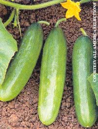

Award-Winning New Cuke And Squash
Howard talks about the 2002 All-America Selections, ’Diva’ cucumber and ’Cornell’s Bush Delicata’ squash (judged by experts for ease of growing, disease resistance, productivity and flavor), which not only live up to their hype, they deliver productivity and flavor beyond the expectation.
By Doreen G. Howard
February/March 2002
By Doreen G. Howard
I plant heirloom vegetables in my garden because I'm partial to the complex flavors of such things as black tomatoes, purple carrots and candy-striped beets. But I'm not such a purist that I don't try new varieties - even a hybrid if it sounds outstanding. 'Diva' cucumber and 'Cornell's Bush Delicata' squash are 2002 All-America Selections (judged by experts for ease of growing, disease resistance, productivity and flavor), which not only live up to their hype, they deliver productivity and flavor beyond the publicity.
'Diva' cucumbers are gynecious (self-fertile, all-female blooms) and perfect for small gardens. I had room for only two vines, both planted piggyback on tomato towers. I harvested 46 cukes from the two plants in about five weeks. 'Diva's quality is topnotch - crunchy with a full, clean flavor.
Fruits stored in the refrigerator for a week are as crisp as newly picked cucumbers. My vines had no disease problems, either.
'Cornell's Bush Delicata' is an open-pollinated, bush-type squash that is highly tolerant to powdery mildew. "It's a good choice for organic production," said George Moriarty of Cornell University, one of the squash's creators. Plants are semibush and sprawl. I put a large tomato cage around each plant and directed growth upward. Each plant produced eight 1-pound fruits in less than 60 days, a big plus in my short Wisconsin growing season.
The squash is a cross between Cornell's powdery mildew-resistant bush acorn squash and an open-pollinated '`Delicata' purchased at a local grocery store, according to Moriarty. Molly Jahn, the squash's other creator, said, "'Delicata' was first released in 1894 and was known for its excellent eating quality, but yields were low and it fell out of favor." After six generations of selection and stabilizing, the two breeders came up with a squash that produces abundantly, incorporates disease tolerance and retains the nutty sweetness of the original 'Delicata.' In fact, the Brix rating (a measure of fruit sugars) on 'Cornell's Bush Delicata' is 16 a month after picking. The average winter squash has a Brix of 8 to 12. "It isn't just the Brix," Moriarty said, "but it's the whole flavor we've been after."
-Doreen G. Howard
Howard is the author of Cooking for Cash (Globe) and has been trialing vegetables for 15 years.
|
 |
 |
|